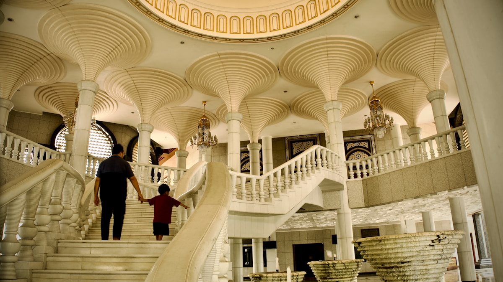
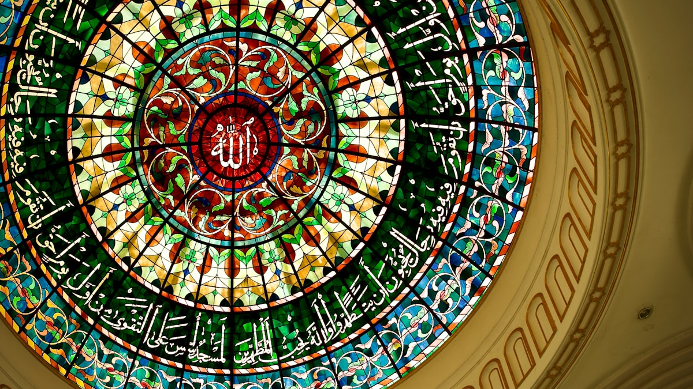
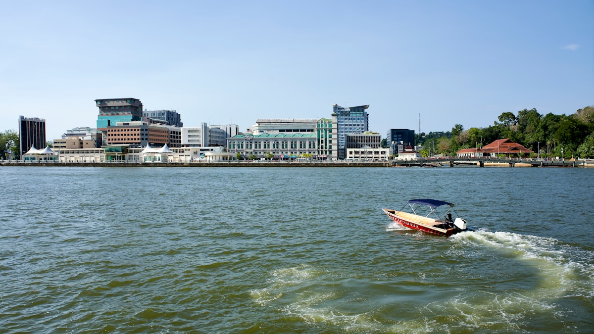
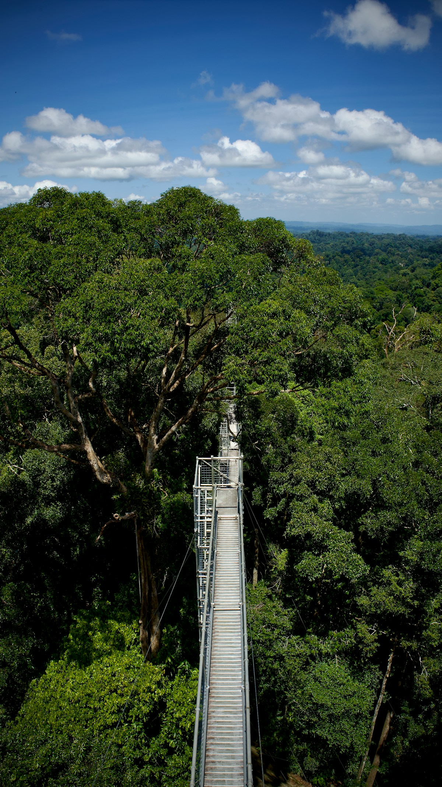
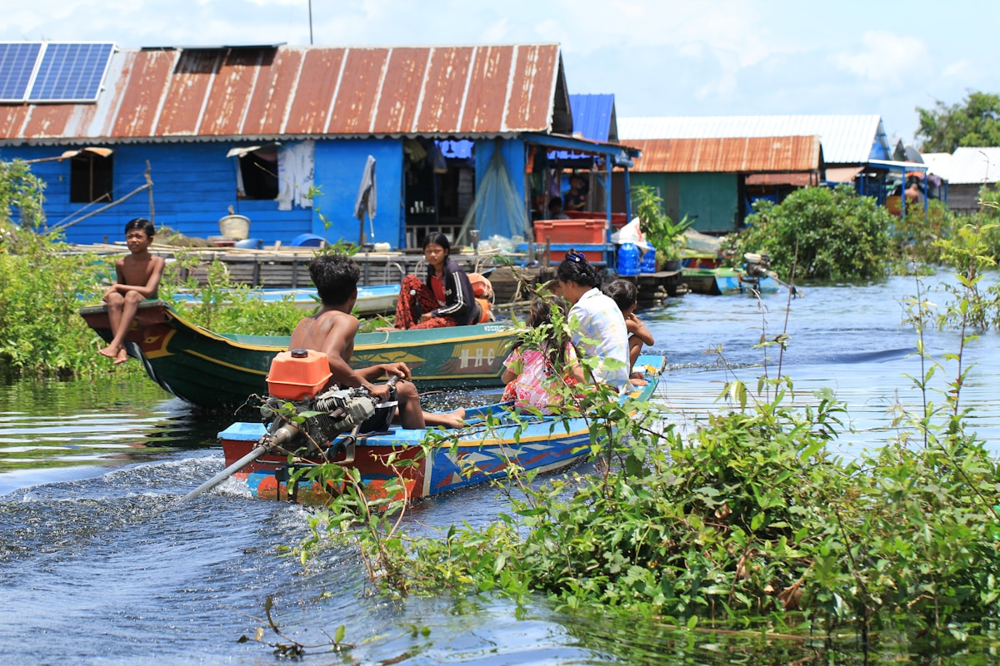
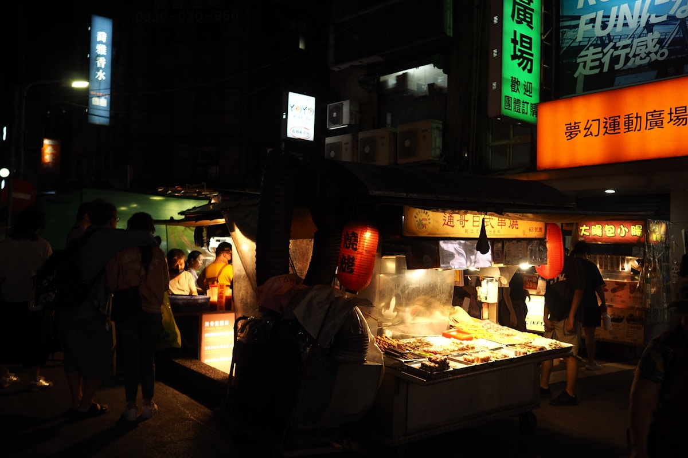
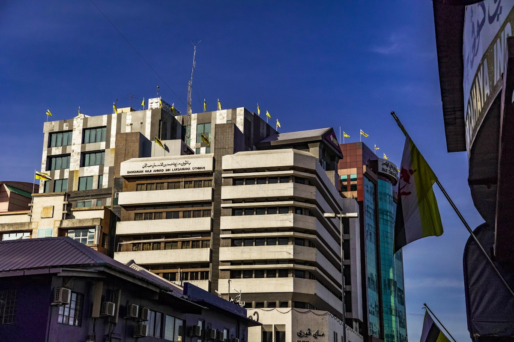
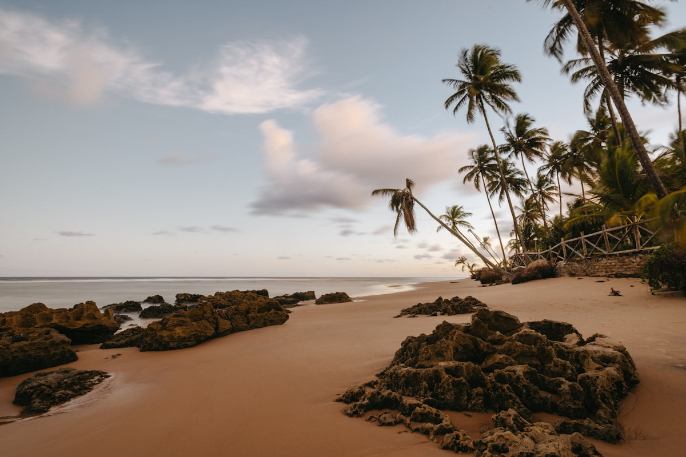

| 事项 | 结论 |
|---|---|
| 事项 | 结论 |
| 签证（最关键） | 中国护照落地签 14 天（B$20），单次入境；同时入境前 72 小时内须在文莱移民局官网完成电子入境卡（E-Arrival Card）登记 |
| 推荐方案 | 斯里巴加湾市 2 天 → 水上村&乌鲁淡布隆 2 天 → 返程 1 天 |
| 返程约束 | 第 5 天从斯里巴加湾国际机场（BSB）返京；机场距市区约 10 分钟车程 |
| 行程链 | 斯里巴加湾市 → 甘榜亚逸水上村 → 乌鲁淡布隆国家公园 |
| 预算（人均） | 经济 8000–12000 ／ 标准 15000–22000 ／ 舒适 35000–55000（人民币） |
| 三件提前事 | ① 在线登记电子入境卡 ② 提前订乌鲁淡布隆一日游（需跟团）③ 备文莱元/新加坡元现金 |
| 季节提醒 | 全年炎热多雨；11 月–次年 3 月相对少雨，雨林吊桥开放率最高 |
| 支付 | 文莱元（B$）与新加坡元 1:1 通用，大型商场可刷卡；夜市与水上村需现金 |
以下为 5 天 4 晚的推荐节奏：前 2 天把城市核心走完，第 3–4 天水上村与雨林，第 5 天返程。文莱城区小，DART 打车 + 水上出租车即可覆盖；淡布隆日为全天跟团。
| 日期 | 行程 | 过夜地 | 主题 |
|---|---|---|---|
| D1 抵斯里巴加湾市 | 北京✈斯里巴加湾市（约 6h 转机），入住市中心，傍晚奥马尔清真寺看倒影 | 斯里巴加湾市 | 抵达+清真寺 |
| D2 | 杰米清真寺 → 皇家礼仪博物馆 → 努鲁尔伊曼皇宫外观 → 加东夜市晚餐 | 斯里巴加湾市 | 城市核心 |
| D3 | 甘榜亚逸水上村船游 → 红树林长鼻猴 → 河滨步道落日 | 斯里巴加湾市 | 水上威尼斯 |
| D4 | 乌鲁淡布隆国家公园一日游：长舟+徒步+60m 树冠吊桥 | 乌鲁淡布隆 | 雨林日 |
| D5 返程 | 穆阿拉海滩晨光 → 市集采购手信 → 返京 | — | 收尾 |
以下为 5 天全程的逐小时执行时间线，可当作「当天打开照着走」的清单。标注 ※ 的可选项视体力与天气取舍。
| 时间 | 事项 |
|---|---|
| 09:00–15:00 | 北京✈斯里巴加湾市（经吉隆坡/新加坡/香港转机，约 6h）。入境走落地签通道，交 B$20、按指纹，出示离程机票与酒店订单 |
| 15:30–16:30 | 机场到市区（DART 打车约 B$10 / 10 分钟），入住市中心酒店 |
| 17:00–18:30 | 奥马尔·阿里·赛福鼎清真寺（免费）：金色穹顶+人工湖倒影，傍晚光线最美；着长袖长裤，女性提供长袍 |
| 19:00–20:30 | 晚餐：市中心餐厅椰浆饭/沙嗲，初探文莱慢节奏 |
| 时间 | 事项 |
|---|---|
| 08:30–10:30 | 杰米·阿山纳柏嘉清真寺（Jame' Asr Hassanil Bolkiah）：全国最大清真寺，29 座金顶+白色大理石，非祈祷时段可入内参观（着长衣，女性戴头巾） |
| 10:30–11:30 | 皇家礼仪博物馆（Royal Regalia）（免费）：皇家座驾、登基大典御用金器、巨型皇家仪式展 |
| 11:30–13:00 | 午餐：Yayasan 综合市场周边本地餐厅（Nasi Katok 鸡饭+拉茶） |
| 13:30–15:00 | 努鲁尔伊曼皇宫外观（Istana Nurul Iman，斋月后开斋节开放参观）：世界最大单体皇宫之一，正门拍金顶与旗杆 |
| 15:30–17:00 | 市区散步：文莱河滨步道、历史中心与邮票/手工艺中心 |
| 18:00–20:30 | 加东夜市（Gadong Night Market）：烤串、炸鸡、椰子水、马来糕点一条街，夜市是文莱美食灵魂 |
| 时间 | 事项 |
|---|---|
| 08:30–09:30 | 市中心码头乘水上出租车前往甘榜亚逸（Kampong Ayer）：世界最大水上聚落，木栈道连通的彩色高脚屋群 |
| 09:30–12:00 | 水上村徒步：沿栈道穿行学校/清真寺/商店，水上村茶点铺坐一坐；包船游水道（约 B$20–30，可议价）看高脚屋与红树林 |
| 12:00–13:30 | 午餐：市区水上村入口旁餐厅（海鲜+椰浆饭） |
| 14:00–17:00 | 红树林长鼻猴船游：婆罗洲特有的长鼻猴与猕猴，傍晚河道看日落，半日团约 B$40–60 |
| 17:30–19:00 | 文莱河滨步道散步，晚餐：河畔餐厅烤鱼 |
| 时间 | 事项 |
|---|---|
| 07:00–08:00 | 跟团集合：旅行社接驳（Freme Travel 等，费用约 B$115–180 含接送、长舟、向导、餐食） |
| 08:00–09:30 | 乘车经苏丹哈吉奥玛阿里赛夫丁大桥（东南亚最长跨海桥之一）进入淡布隆县，转乘长舟逆流而上 |
| 09:30–12:00 | 树冠吊桥（Canopy Walkway）：60 米高空吊桥穿梭树冠层，俯瞰无边雨林绿海，运气好遇犀鸟 |
| 12:00–13:00 | 雨林内午餐（简餐/便当） |
| 13:00–15:00 | 雨林徒步：沿河流步道看蕨类与巨树，或在清凉河段戏水 |
| 15:00–17:00 | 长舟返程+过桥回市区，晚餐：加东夜市补一轮 |
| 时间 | 事项 |
|---|---|
| 07:30–09:30 | 早起去穆阿拉海滩（Muara Beach）：晨光海风+当地早市，或市区买文莱蜂蜜/手工蜡染手信 |
| 09:30–11:00 | 回酒店退房，行李寄存后补购：文莱皇家航空周边/椰糖糕点 |
| 11:00–12:00 | 午餐：最后一顿 Nasi Katok+拉茶 |
| 13:00–14:00 | 赴斯里巴加湾国际机场，办值机（机场距市区约 10 分钟） |
| 15:00–21:00 | 转机返京（约 6h），入境到家 |
必去（必去）/ 顺路（顺路）/ 可跳过（可跳过）。

必去
必去
必去
必去
顺路
顺路
顺路图片为 Unsplash 主题图（奥马尔清真寺、杰米清真寺、水上村、雨林树冠、加东夜市等均为文莱实景或婆罗洲同类主题图），用于页面配图。更多免费景点：Yayasan 综合市场、文莱河滨步道、历史中心、皇家礼仪博物馆（免费）。
点击左侧节点可在地图上定位；点击地图 marker 会高亮对应节点。坐标为 WGS-84 转 GCJ-02 纠偏后标注。
以下为单人、不含购物的估算，人民币计价；出发地基准北京。汇率按 1 元 ≈ 0.19 文莱元（B$）估算。往返机票按转机往返 3000–4000 元计，乌鲁淡布隆一日游按 B$140（约 740 元）计。
| 项目 | 经济（8000–12000） | 标准（15000–22000） | 舒适（35000–55000） |
|---|---|---|---|
| 往返机票 | 转机往返 3000–4000 | 直飞/短转 4500–6000 | 商务舱/灵活时段 12000–20000 |
| 住宿（4 晚） | 青旅/民宿 150–250/晚 | 四星酒店 350–600/晚 | 帝国酒店/度假村 1000–2500/晚 |
| 交通 | DART+水上出租 300–500 | DART+包车一日 800–1500 | 全程专车/直升机观光 4000–8000 |
| 门票 | 清真寺免费+船游 200–300 | 含长鼻猴团+博物馆 800–1200 | 含全部项目+私团 2500–4000 |
| 餐饮（5 天） | 夜市+本地餐 400–700 | 正常下馆子 1200–2000 | 酒店餐厅+河畔晚餐 4000–7000 |
雨林改走「浅溪徒步+树冠吊桥」轻量一日游（部分旅行社提供短程版）；水上村半天+红树林半天合并为 1 天，节奏放缓；皇宫外观与皇家博物馆对儿童友好。整体不赶路。
多 1–2 天去都东（Tutong）河游与诗里亚（Seria）油田区：文莱石油经济打卡、油井纪念碑与沙滩；或加一天帝国酒店下午茶+高尔夫体验，享受文莱的「慢奢侈」。
| 方式 | 时长 | 参考价 | 备注 |
|---|---|---|---|
| 转机（推荐） | 北京→斯里巴加湾约 6h | 往返 3000–4000 元 | 经吉隆坡/新加坡/香港转机 |
| 直飞 | 极少班次 | — | 文莱皇家航空线路有限，多数需中转 |
| 跨境陆路 | 美里/林梦→斯里巴加湾 1–2h | 约 100–200 元 | 从砂拉越（马来西亚）陆路/快艇入境 |
| 区域 | 价格/晚 | 优点 | 短板 |
|---|---|---|---|
| 斯里巴加湾·市中心 | 经济 150–250 / 标准 350–600 | 清真寺与码头步行可达 | 晚间餐厅选择少 |
| 斯里巴加湾·河滨/加东 | 标准 400–700 | 夜市与河景兼顾 | 离机场略远 |
| 帝国酒店等度假村 | 舒适 1000–2500 | 奢华海滩度假体验 | 远离市区，价格高 |
| 淡布隆·邦亚镇 | 经济 200–400 | 雨林行程前夜基地 | 设施简单 |